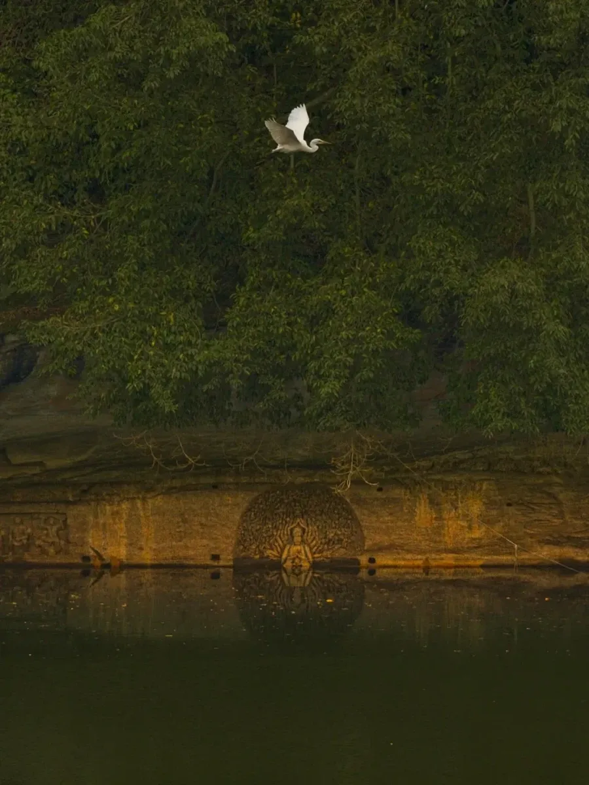
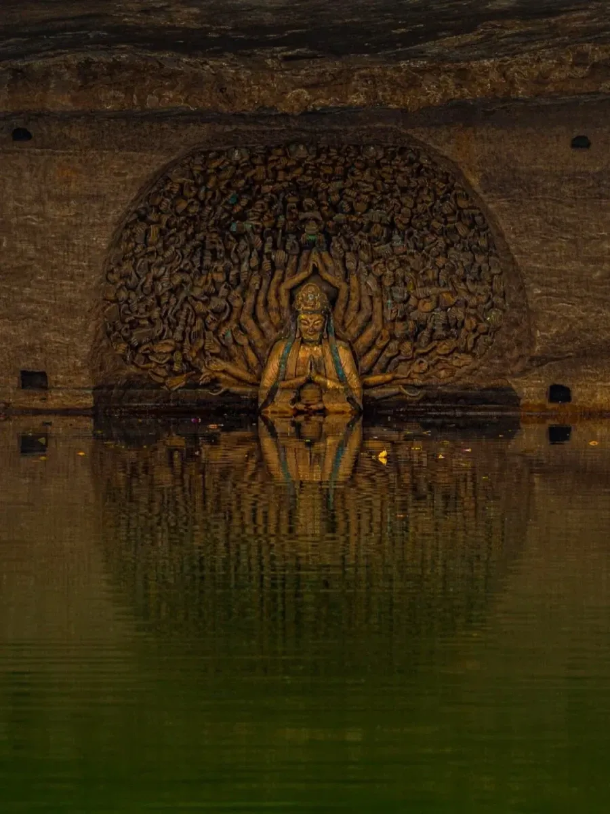

와씨... 무슨 소울류 게임 막판보스급인줄...


와씨... 무슨 소울류 게임 막판보스급인줄...
뭔가 이런 자연이 감춰둔
거대하거나 기괴한것들 보면
존나 무섭드라...
현대 제작 조각상: 수백 년 된 고대 유적이 아니라, 1996년 현지 석공 샤오톈윈이 마을 주민들의 요청으로 조각하기 시작한 작품으로 알려져 있습니다.
급 짜쳐짐...
ㅋㅋㅋㅋㅋㅋ
오염된 천수관음 이라는 이름의 보스몹일거같음 ㄷㄷㄷ 오염되서 ㅈㄴ 기괴해
히든보스 느낌이네 ㄷㄷ
ㅁㅊㅋㅋ
분위기 ㅈ대네;
ㅅㅂ 죄ㅛㅗㅇ합니다
늙어서 그런가.. 두 번째 사진보고 응? 뻔데기가 왜 있지 맛있겠다 라고 생각한 나를 반성함..ㅠ
(이름과 체력바가 나타나며)
소울류, 메인스토리 말고 히든 보스 기믹이네ㄷㄷ
아이템 몇개 조합해서 동력장치 가동하면 갑자기 호수 물 빠지면서 천수관음 등장
천수가 진짜 손이 천개였구나